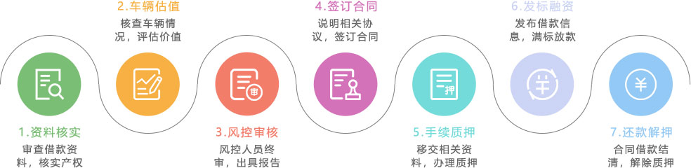

什么是车融贷？
车融贷车融贷业务为借款人提供相关信用咨询、车辆评估、抵押借款、协议管理、回款管理等多方面的服务，九趣网以“汽车抵（质）押借贷”作为主要业务。其中抵押车辆要在车管所办理抵押登记手续，并提供相关车辆手续，由公司安排专业人员对抵押车辆进行GPS安装。在合同期间，借款人仍可正常使用该车辆。而质押车辆必须停在公司或者营业部专用车库，由九趣网为借款人妥善保管车辆。
-
【100%足值质押】
100% PLEDGE OF FULL VALUE
-
【双重评估风险】
DOUBLE RISK ASSESSMENT
-
【出借额度小】
A SMALL AMOUNT OF
BORROWING
-

【降低风控难度】
REDUCE THE DIFFICULTY OF
WIND CONTROL
-
【智能分散】
INTELLIGENT DECENTRALIZATION
车抵押借款办理流程
常见问题
1、什么是车融贷？
车融贷是汽车抵（质）押标，需要借款人到车管所做抵（质）押登记手续。
2、车融贷的风险如何把控？
九趣网有严苛的风控系统，从借款人的实力背景至质押的车辆都有一套全面的审核标准，帮助出借人从源头上控制住风险。
3、车融贷适合什么样的人投资？
资金量适中，适合投资中短期标的比较稳健型的出借人进行投资。
4、车融贷的计息方式和到账时间？
计息方式分为按月付息到期还本和到期还本还息。1个月以上的标是按月付息到期还本的计息方式。1个月的标的是到期还本还息的计息方式。款项在还款日24点前还到出借人的账户中。
5、如何做好车抵贷的风控？
贷前：营业部初审车辆和借款人信息，初审通过后总部再次审核借款人资料；
贷中：监控借款人的行车轨迹，质押车辆管理；
贷后：还款日前提醒还款，如果借款人逾期不还将交由第三方催收公司进行催收。催收不成功变卖抵（质）押车辆。